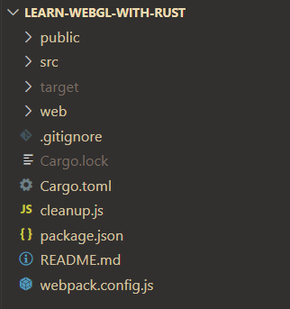
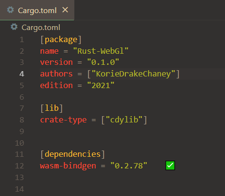
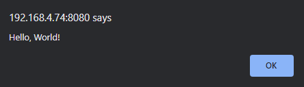

Chapter 1 : Setup
I would also like for you to use the same template which I am using, so we do not have any trouble.
cargo generate https://github.com/KorieDrakeChaney/Rust-Wasm-Web-Template.git
cd [name-of-your-choice]
cargo build && npm install
code ./
You should get something a layout like this :

You'll have a public, src, and web directory.

You'll notice that there is already a crate-type and a dependency already loaded in. Here is one of our ways to talk to javascript, using wasm-bindgen. Taken from the repository:
Features
-
Lightweight. Only pay for what you use.
wasm-bindgenonly generates bindings and glue for the JavaScript imports you actually use and Rust functionality that you export. For example, importing and using thedocument.querySelectormethod doesn't causeNode.prototype.appendChildorwindow.alertto be included in the bindings as well. -
ECMAScript modules. Just import WebAssembly modules the same way you would import JavaScript modules. Future compatible with [WebAssembly modules and ECMAScript modules integration][wasm-es-modules].
-
Designed with the ["Web IDL bindings" proposal][webidl-bindings] in mind. Eventually, there won't be any JavaScript shims between Rust-generated wasm functions and native DOM methods. Because the wasm functions are statically type checked, some of those native methods' dynamic type checks should become unnecessary, promising to unlock even-faster-than-JavaScript DOM access.
const CopyPlugin = require("copy-webpack-plugin");
const path = require('path');
const WasmPackPlugin = require("@wasm-tool/wasm-pack-plugin");
module.exports = {
entry:
{
main : "./web/main.js",
},
output: {
path: path.join(__dirname, 'dist'),
filename: '[name].js',
},
mode: "development",
plugins: [
new CopyPlugin({
patterns: [
{ from: './public/index.html'},
],
}),
new WasmPackPlugin({
crateDirectory: path.resolve(__dirname, ".")
})
],
experiments : {
asyncWebAssembly : true
}
};
You do not have to know what's going on here, basically just compiling our code from our rust files into a javascript/wasm relationship.
The test
We should have these scripts in our json file
"scripts": {
"build": "node cleanup && webpack",
"server": "webpack-dev-server",
"refresh" : "npm run build && npm run server"
}
"build" : calls node cleanup, which cleans the dist folder, then calls webpack to bundle our code.
"server" : creates a webpack-dev-server.
"refresh" : calls build then creates a server.
in your terminal, with the folder open, type in the command
npm run refresh
You should have some new folders created, a dist folder, and a pkg folder.
The pkg folder will contain the files the wasm-pack generated and the dist will contain files generated by the bundler, webpack.
Open up the dev server that webpack created. You should be greeted with an alert:

Now that we have our environment ready, let's tackle on some WebGL with creating a window!
Copyright (C) 2022, Korie Chaney.